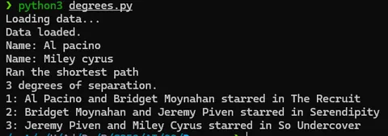
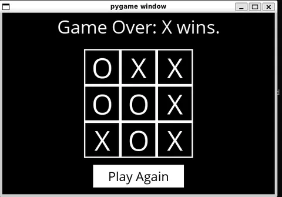
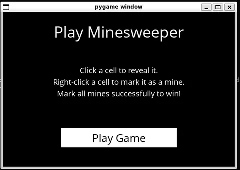
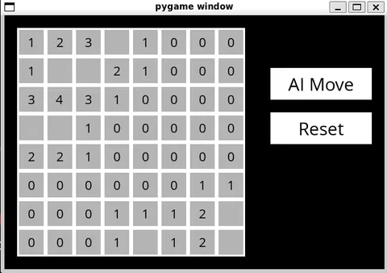
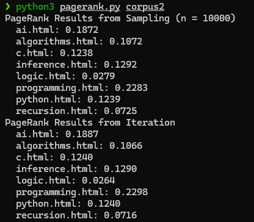
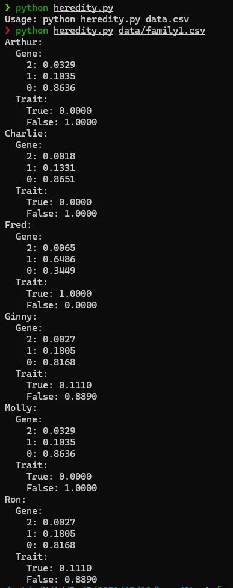

What Comes After CS50x? Discover CS50 AI
Explore insights and challenges from Harvard's CS50 AI course, covering search algorithms, probability, and optimization in artificial intelligence
By Sukalyan RoyPublished Updated 10 min read

So… i did it, i gave in to the hype and spent quite some time grinding and finishing the original CS50. Well, actually that was 3 years ago. Now what?
Now that i’m in my final semester of university , it feels like the perfect time to tackle something substantial and difficult. Hence, the Harvard CS50 AI.
The notes provided by Harvard themselves might be a lot better for studying, but the following are my observations and problems that i have faced while working on the problem sets.
Also, the problem statements here are huge, and much much harder than the CS50x problem statements, so this will be broken into two posts.
TL;DR #
-
CS50 AI is a natural next step after CS50x if you want to understand AI from first principles.
-
It is not just "use a model through an API." It starts with search, logic, uncertainty, optimization, and learning.
-
The projects are the point: they force you to turn ideas into working programs.
-
This post starts my notes on what the course covers and why I picked it.
Week 0 - Search #
This was such a painful start, totally stumped for several days and not being able to understand what to do and how to begin. My first mistake was assuming that since i had studied these topics for my semester exams, that i knew how to apply them. Which is definitely not the case.Had to really go through the material from scratch and try to understand them before being able to complete this.
Degrees #

Inspired by the game of Six Degrees of Kevin Bacon, this tries to figure out the shortest path between any two people based on the imdb list. With some modifications, this can be run on any database of people with meaningful ways to connect between them.
First observation: Since we need the guaranteed shortest path, we must use BFS (Breadth First Search).
And for BFS we use a Queue, which is already provided in the utils.py file by CS50 as the Queue frontier, which in turn is just a modification of the stack frontier as everything is common between them except the removal of elements.
Another cool thing is that, they have done all the loading and preprocessing steps for us, in this problem statement, you just have to take as input the source and target IDs and then find the path between them.
Another hint would be from the lecture itself, remember how they kept track of actions? that will help us to find the actual path taken once we do reach the target. (Look at the Node class’s fields)
Major pitfall: append does not return a new list. It mutates the list in-place and returns None. This made a lot of trouble for me when incrementing the actions list.
Another thing to keep in mind, even though your code might work for smaller datasets, always check edge cases. For example, my naive implementation had no checks for repeating people, but it still worked for the small dataset, and then timed out when trying to use check50.
This i fixed by reconstructing the path using parent pointers.
Pro tip: Use chatgpt in study mode, it wont give you the answer but genuinely helps point you towards the right direction.
Tic Tac Toe #

(I lost to the AI lol. I was O)
This is a game we have all played at some time or the other, and one of the best starting points to learn about the minimax algorithm, as most other games are too complicated to be solved with it unless you do serious optimizations.
I’ve had studied minimax for my AI sem exams before, but never really understood it. Watching the video here, really really cleared everything up for me.
First we have to make the game playable without AI, and then we’ll implement the minimax function.
Once making the game playable, i had gemini rewrite the runner.py to enable human vs human playing. I could do that myself but that’s not fully relevant to learning about AI and i really wanted to play the game a bit.
For my final submission, i’ve implemented alpha-beta pruning, which was quite easy compared to what i thought. The tricky part was figuring out the initial values, but the lectures and the AI study mode hints combined, i was able to finish it myself.
One hint that stood out to me was the short circuit: At the main minimax function when looping for X and O, if the utility ever becomes -1 or 1, that means it’s the best case for either O or X. No need to go further, break it there.
Week 1 #
Even though I have studied Discrete Math in University that had a healthy dose of Propositional Logic,
most of the code related things that they mention in this lecture beyond this, regarding inference, seems new to me. (Though on a closer look, i have done these exact inference table problems on paper before several times)
The main idea of this week is how we store knowledge and represent it in traditional data structures. If we go through the logic.py file provided, it’s data structures and methods almost resemble an Abstract Syntax Tree.
Knights #
Knowledge is one big formula built as And(...) of constraints.
Simple on the surface but really tricky to get it right. Once i figured out the pattern for the knowledge representations, I was running almost on autopilot translating the text into logical statements.
All this came crashing down once i reached the last question, Even though everything looked right, there were many many subtle problems with the logic, and even when i somehow got it to pass, i don’t think i fully understood it yet.
The main mistakes i did was adding an extra () when writing an Or clause; And not using variables to represent complex logic sentences, This led to my knowledge3 statement especially, to get really big and confusing.
MineSweeper #


(The AI is still not perfect, it doesn’t win everything, but does a good job)
First step was understanding the game itself. Even though i’ve known minesweeper exists since i first touched a computer, I never tried playing it seriously, always just a bunch of random clicks to see how far I could go.
The core idea is to understand that the numbers in each cell refers to how many surrounding cells contain a mine. Using this we can reason which ones to avoid and which ones to pick. For example, if a cell at a corner with only 3 neighbors has a number of 3, i should not pick any of them as all are mines, and so on goes the logic.
Now, with the added appreciation of what the game actually is, and a mental model of how i would play it myself, it is time to develop that mental model into something an AI can reasonably understand.
The provided runner reduces a lot of work, though like the runners of other gui projects, I plan on revisiting it later to adapt it to a more general playable game.
The minesweeper.py file is where the main logic gets done, and here I got stuck for several days again.
Even though i could visualize the logic for myself, it felt really confusing as to how would i encode it in a reasonable amount of LOC (Lines of Code).
One nontrivial insight is that whenever your knowledge is updated, it should update all the sentences in your knowledge base and not just the most recent one. This is where i got stuck for a long long time. Took a lot of hints to finally get the loop right.
Rest of the functions like make safe moves and make random moves were relatively simpler to do, so much so that i finished them before writing the actual add knowledge function.
My main suggestion for this problem set will be to remember that you must update everything in your knowledge base after every new piece of knowledge added to it, for that, read all the completed functions first cause they have done a lot of heavy lifting for us already. You will need a lot more nested loops than you think, and that’s okay.
Week 2 #
This week deals with probabilities and different ways of encoding them. As is the case with the previous weeks, I have encountered most of these topics, with the possible exception of Bayesian networks, in my University courses before, so the lectures were not too insane to grasp.
Even so, It was quite confusing to see why Markov models were useful at all, until the lecture gave the example of speech to text. That was the point where it all clicked, we get some observed variables which is the sound recording, and from there we infer the hidden variables that is the actual words spoken and in what order.
One confusion that I had while watching was the difference between Markov models and bayesian networks, because on surface, both of them seemed like a directed collection of nodes where the edges represent the dependencies. So i looked up on stackoverflow.
So far what I have understood is that, the core difference is that a Markov chain can be cyclic but a Bayesian network is always Acyclic. Both can be considered PGMs or Probabilistic Graphical Models. And we can even use a bayesian network to show a Markov process if we choose the right constraints.
PageRank #

Have you ever wondered how Google makes their search work? Well this project will give you a slightly old but still reasonably functional glimpse into the whole thing.
It is quite obvious that the real world search algorithms do not use this anymore, but the implementation was quite interesting to do.
The most important syntax thing i learned here is to make sure that the key value pairs are properly unpacked. I faced so many errors because of this, because my dict comprehension was returning a KV pair but i wrote the code assuming that I am sending the keys or values only.
The rest of the implementation can be easily done if you read the specifications carefully. Due to python’s easy syntax, it did not take me much time to write it out.
One interesting change one could do here is, using the transition_model function to generate a transition matrix and then use matrix methods to iteratively solve pagerank. I have found several implementations of it online that i want to try out later but for now i’ll just link them at the end of this post.
Heredity #

Using Bayesian Networks and Joint probabilities to predict whether a child has a trait or not, based on the observable traits in their parents.
Essentially we do it in three steps:
-
Calculate the joint probability of every possible situation. That is, for every person to either show or not show the trait under the assumption that they either have 0 or 1 or 2 genes, and whether their parents have 0/1/2 genes each.
-
Update the probability dictionary with this new joint probability
-
Normalize everything so that the sum is 1
Key insight is that, for these inferences we must know the relationships between hidden and observable traits, otherwise it is not possible.
The two main problems I faced here were:
-
The same KV pair structure mistakes that i was making in the previous one. Often i didn’t unpack everything properly and was trying to index a string person as person[index] instead of doing probabilities[person][index]. The difference looks minor but changes everything.
-
Remembering to think about stuff in terms of probability. I was so lost in debugging the code for dict unpacking, that i got stumped when i actually had to write the product of probabilities. it’s a simple formula of (A happens and B happens) or something like (A and not B) and (not A and B).
One cool modification to this one would be getting some medical datasets and trying to generalize it.
Conclusion #
The difficulty of the projects notwithstanding, my observation so far has been that they are not complete unless you fully understand all the code that they provide you with. A lot of the details of how to encode the theory, the best practices of representing it in code, etc are all hidden in the pre-written stuff.
So once i’m done with the course, i would really like to revisit the projects and try to personalize them to do something more.
Till then though, there’s a few more weeks worth of projects to do, so i’ll see you soon, in the next post.
Some related cool stuff:
https://github.com/LorMolf/WeWereOnABreak
https://www.geeksforgeeks.org/python/page-rank-algorithm-implementation/
https://github.com/mariusprd/page-rank-algorithm ← This one is in MATLAB